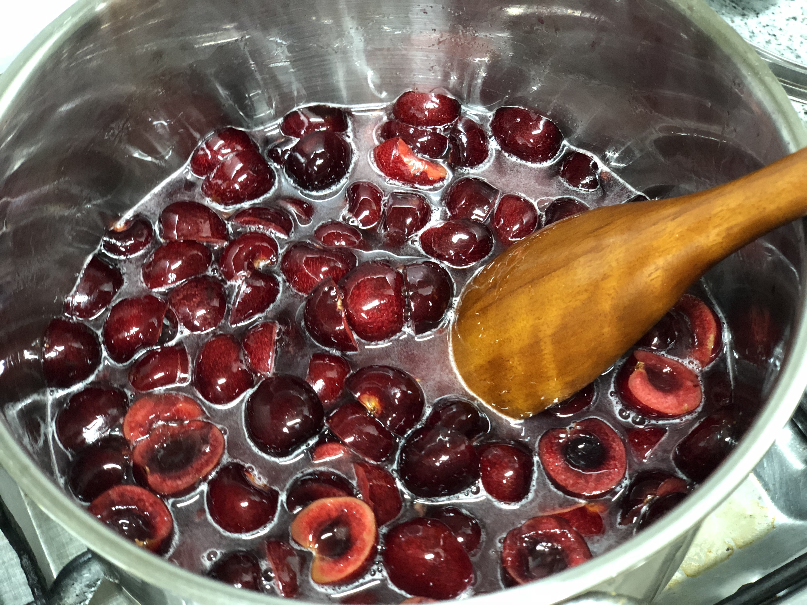
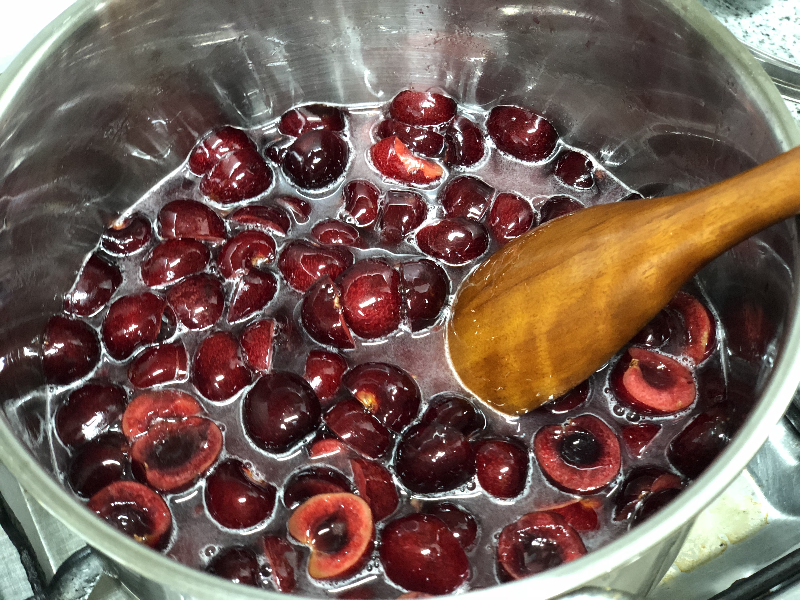

유리병을 깨끗히 세척해서 물기가 없도록 건조시켜 줍니다. tip.열탕 소독을 해도 좋아요! (Clean the glass bottle and let it dry. tip.You can disinfect it in hot water!)
잘익어서 색이 짙은 체리를 준비하고 베이킹소다와 흐르는 물에 씻어준다. (Prepare ripe cherries and wash it in water.)
씻은 후, 키친타올로 물기를 제거하고 체리를 반으로 갈라 씨앗을 제거한다. (Remove the water with a kitchen towel and cut the cherries in half to remove the seeds.)
 

냄비에 체리, 설탕, 화이트 와인, 레몬즙을 넣고 잘 저어줍니다. (In the pot, put cherries, sugar, white wine, and lemon juice. Stir well.)
센불로 끓이다가 끓어오르면 중간불로 5분정도 화이트와인의 알콜향이 날아갈때까지 졸여줍니다. (Boil in high heat, boil up the bubbles, and boil it until the alcohol fragrance of white wine is blown for about 5 minutes in the middle fire.)

불을 끄고 식힌 후, 병에 담으면 완성! (Turn off the fire and cool down. It's complete!)
* 완성된 체리 콩포트를 요거트나 소주, 화이트 와인처럼 맑은 술에 넣어서 먹거나 그냥 꺼내서 먹으면 됩니다!;D (* You can eat cherry compote put in yogurt and clear drink like Soju, white wine, or just take it out! )